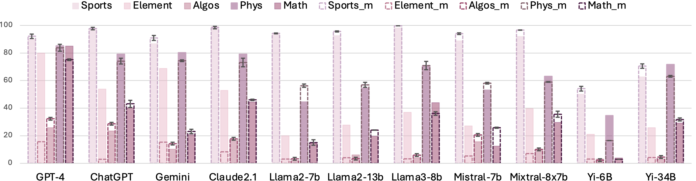
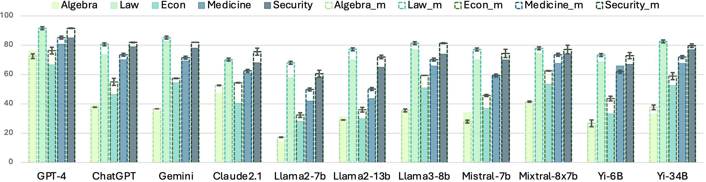

Have Seen Me Before? Automating Dataset Updates Towards Reliable and Timely Evaluation
Abstract
Due to the expanding capabilities and pre-training data, Large Language Models (LLMs) are facing increasingly serious evaluation challenges. On one hand, data leakage often leads to overestimated performance when using existing benchmarks. On the other hand, periodically curating datasets manually is costly.
In this paper, we propose to automate dataset updates for reliable and timely evaluation. The basic idea is to generate unseen and high-quality testing samples based on existing ones to mitigate overestimation problems when data leakage happens. In specific, we propose two strategies with systematic verification. First, the mimicking strategy employs LLMs to create new samples resembling existing ones, to the maximum extent preserving the stylistic of the original dataset. Our experiments demonstrate its evaluation stability across multiple instantiations and its effectiveness in dealing with overestimation issues in most cases. Second, for the cases where the mimicking dataset works poorly, we design an extending strategy that expands the generated samples according to varying cognitive levels.
To the best of our knowledge, this is the first work to investigate the automated updates of datasets for handling the overestimation of LLMs when data leakage happens.
The auto-dataset update framework
Is it stable if we dynamically update evaluation datasets?
Clearly, a major concern is whether they can produce consistent evaluation results. To answer the above stability question, we choose the mimicking strategy and iterate the update process four times on the tasks from MMLU and BIG-Bench. and conducted experiments using seven open source models: Llama-2-7b-chat, Llama-2-13b-chat, Llama-3-8b-Instruction, Mistral-7B-Instruct-v0.2, Mixtral-8x7B-Instruct-v0.1, Yi-6b-chat, Yi-34b-chat, and four closed-source models: GTP-4, ChatGPT, Claude2, Gemini-pro.   Compared with the performance of baselines on original datasets, their performance on our datasets are similar, the difference of the two scores is 5% on average. Among four different mimicked datasets, the standard deviation is limited, ranging from 0% to 3%. This demonstrates the stability of our dataset update strategy.
Can mimicked and extended datasets alleviate overestimation when data leakage occurs?
BibTeX
@misc{ying2024seen,
title={Have Seen Me Before? Automating Dataset Updates Towards Reliable and Timely Evaluation},
author={Jiahao Ying and Yixin Cao and Bo Wang and Wei Tang and Yizhe Yang and Shuicheng Yan},
year={2024},
eprint={2402.11894},
archivePrefix={arXiv},
primaryClass={cs.CL}
}